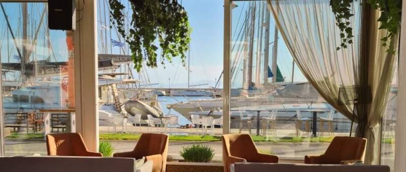

Cocktailbars
Vie, Umbra en Marina Cafe Bar stonden bij de cocktailbars. Meer tips staan bij Cocktails.

Kos biedt een relaxte, maar levendige uitgaansscene: van bars en cocktailplekken in het centrum met terrasjes aan de haven tot grotere clubs, waar je tot diep in de nacht danst op hits en themafeesten. Er zijn strand- en beach parties met DJ's, muziek en cocktails op het zand, pool parties met foam, buckets en dag-tot-avond vibes. Partyboten die 's avonds varen met open bar, zwemstops en uitzicht op de kust. De sfeer is gemixt met locals en toeristen, van chill cocktails drinken bij zonsondergang tot energieke nachten.
Vie, Umbra en Marina Cafe Bar stonden bij de cocktailbars. Meer tips staan bij Cocktails.
Op de lijst: Bar Street, Mattatoio, Sitar, Mylos Beach Bar, Camel Bar, Downtown Club en Caramela. Bar Street gaat niet overal even vroeg dicht — lees de aparte pagina.
Strand- en poolfeesten: Mylos, Black Amber en Amos. Er zijn ook partyboten. Het seizoen bepaalt of ze varen.